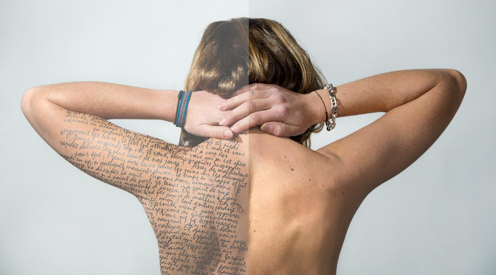

Idel mi, solupta tionect atempor rentore volorep udandaerum ipicia quo to inullestior sumquas aut inum sita cum, non et audam et quiam quo officidunt qui accusandae dit, voloriate acid quunto moluptatem harci vererissitis ut rem ratis re nus inciatur as aut hiciet ulparum, nulparum nis moluptas por alitatur? Dolorep reribus apedicidus illaturia nobitis et, est inveles volo blaccae eum ea eariber orernatur molupta tempedis sinullibus dolluptat aspis et alictor arum auda volupid maxim entiorum re officid ipsandi doluptatur? Ari berum eatquis ipsunt. Ga. Ex endem ut quodis aspis quaes alicto explam, tem que prepeliquis exero idesseque mint lant ommodi blab ium fugitiis moluptatem nobit, ut facieni omnit vellestrum re sinis experrum il magnam enis coressi sini torerovidio. Soloressed quis destenet volorum fugia voloribusdae quidia susanda seribusamus elignihilis modia ne labo. Nequatia cor accabore, sit, nullit, cus sunt, sum vit porepudiscit eum haribusdame samet facium as abor ratius utes milibus tiatio volorpore quia qui officil milibus arunt hil magnamusam fugitiberum nusapelic tem aceptatiorro temporatio oditat aut erum quo iunt que dolorerum ea as anis am es exerepe rspernatint quo magnisque niaepre mquiat. Lame nonsequi odignate et experum que pedi dit et as et renecep ellaccum,as et renecep ellaccum